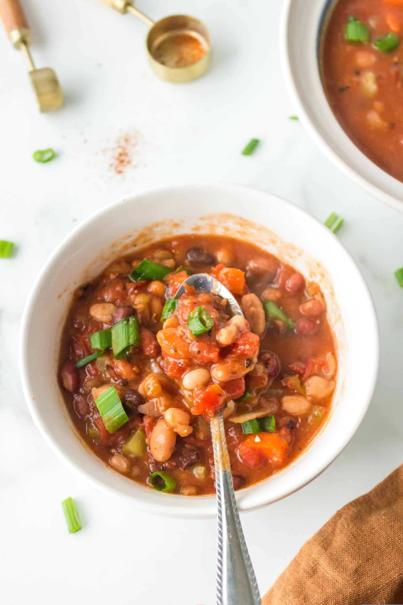

15 Bean Soup, Vegan and Gluten-Free

Description
This recipe makes a hearty, healthy 15 bean soup that's vegan, gluten-free,
and packed with nutrition. Not to mention easy to make. You'll need an instant pot
or some other pressure cooker to make this recipe happen, but for this and plenty
of other goodies, the pressure cooker is a worthwhile investment.
Ingredients
- 1 20oz package of dry 15 bean mixture
- 1 tbsp olive oil
- 8 cups water
- 1 onion, chopped
- 2 carrots, chopped
- 3 celery stalks, chopped
- 1 15oz can crushed tomatoes, with the juices
- 1 tsp chili powder
- 1 tsp sea salt
- 1/2 tsp freshly ground black pepper
- 1 lemon, juices
Instructions
- Rinse and drain the beans in a fine-mesh colander.
Pick through them to remove any debris.
- Pour the beans into a 6-quart or 8-quart Instant Pot.
- Add the olive oil and water.
- Lock on the lid and set the time to 35 minutes at high pressure. When the
cooking time is up, let the pressure come down naturally for 10 minutes.
Use the quick-release to get rid of any remaining pressure, and then
carefully remove the lid.
- Stir in the chopped onion, carrots, celery, crushed tomatoes, and chili powder.
- Lock on the lid and set the time to 3 minutes at high pressure.
- Repeat the depressurization process from step 4.
- Stir in the sea salt, black pepper, and lemon juice.
- Serve hot.